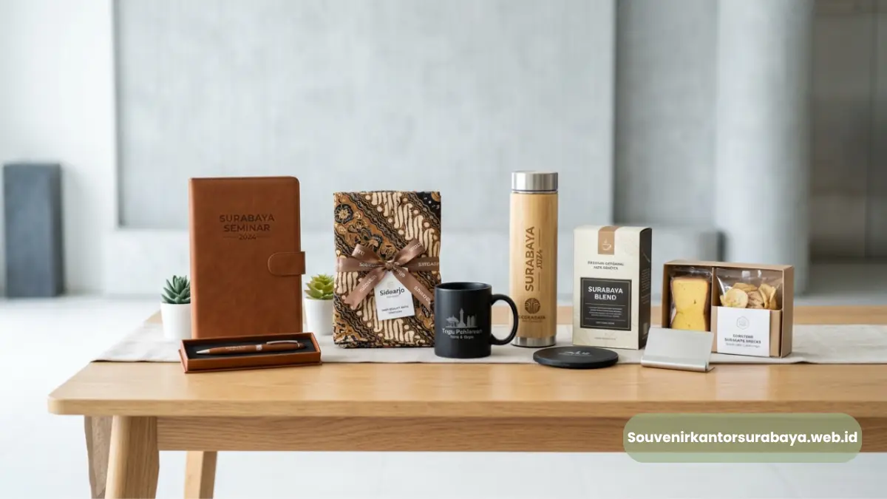
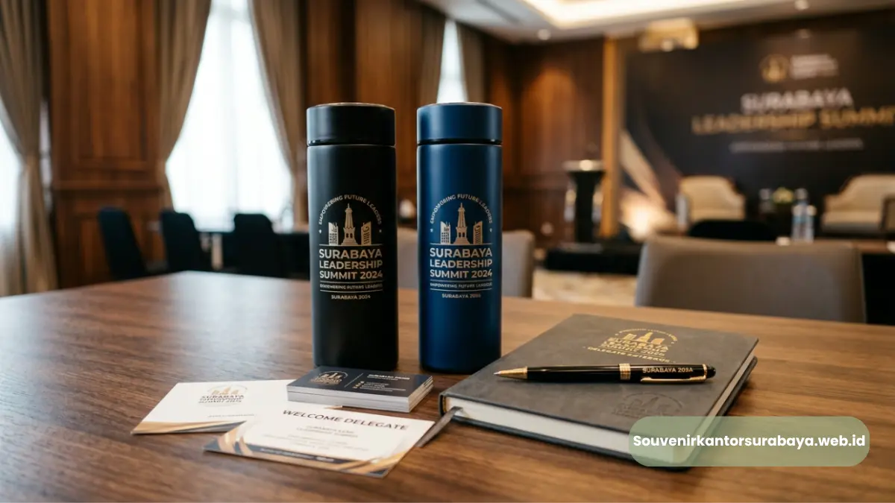
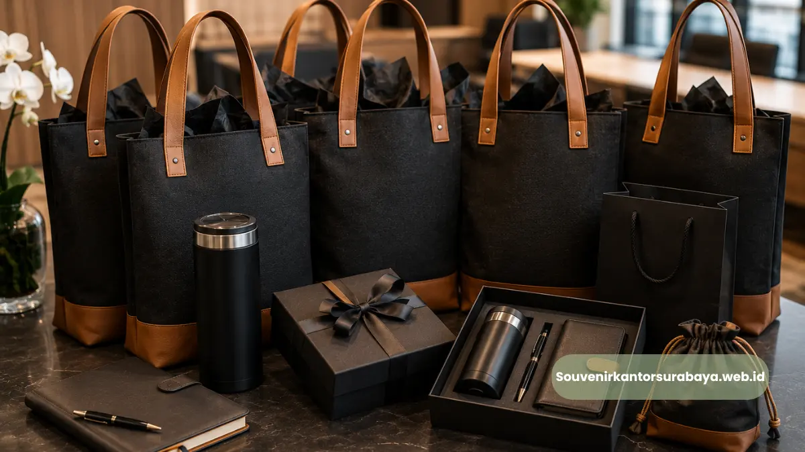
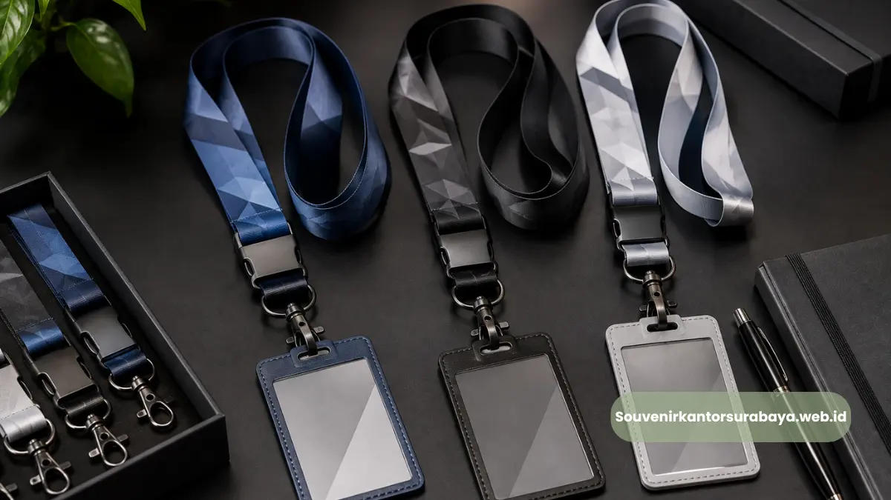
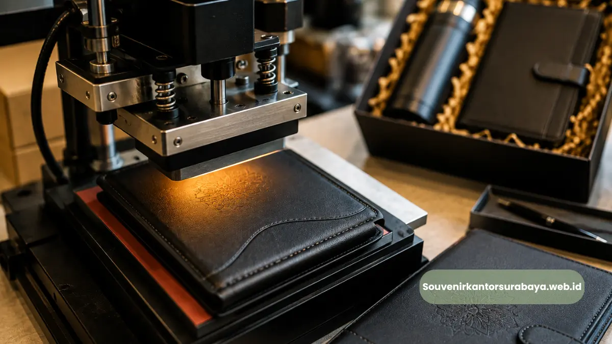

- Alat Tulis dan Notes Custom Logo untuk Seminar
- Kapan Alat Tulis Cocok Dijadikan Souvenir Seminar?
- Tumbler dan Botol Minum Korporat
- Mengapa Tumbler Lebih Bertahan Lama Sebagai Media Branding?
- Tas Seminar sebagai Wadah Materi Sekaligus Media Branding
- Apa Fungsi Tas Seminar dalam Sebuah Acara Korporat?
- Flashdisk dan Perangkat Digital Custom Logo
- Bagaimana Menentukan Jenis Souvenir yang Tepat untuk Seminar?
Jenis Souvenir untuk Seminar Surabaya yang Paling Diminati
Jenis souvenir untuk seminar Surabaya yang paling diminati perusahaan meliputi alat tulis custom logo, tumbler korporat, tas seminar, dan flashdisk. Keempat kategori ini dipilih karena fungsional, mudah dibawa peserta, dan efektif memperpanjang visibilitas merek setelah acara selesai.
- Alat tulis dan notes menjadi pilihan klasik untuk seminar bertema edukasi atau pelatihan.
- Tumbler korporat memberikan visibilitas merek jangka panjang karena dipakai berulang.
- Tas seminar berfungsi sebagai wadah materi sekaligus media branding sejak awal acara.
- Flashdisk custom logo cocok untuk seminar yang melibatkan modul digital.
- souvenirkantorsurabaya.web.id menyediakan seluruh jenis souvenir seminar dengan opsi custom logo.
Alat Tulis dan Notes Custom Logo untuk Seminar
Alat tulis seperti pulpen, notebook, dan block note tetap menjadi salah satu jenis souvenir seminar paling banyak dipesan karena fungsi praktisnya.
Peserta seminar umumnya membutuhkan alat tulis untuk mencatat materi, sehingga souvenir ini langsung terpakai selama acara berlangsung, bukan hanya menjadi kenang-kenangan pasif.
Kapan Alat Tulis Cocok Dijadikan Souvenir Seminar?
Alat tulis paling relevan digunakan untuk seminar bertema edukasi, pelatihan, workshop, atau seminar yang membutuhkan sesi diskusi aktif.
Desain notebook dengan logo perusahaan di sampul depan turut memberikan kesan rapi dan profesional bagi penyelenggara.
Tumbler dan Botol Minum Korporat
Tumbler custom logo menjadi salah satu jenis souvenir seminar yang paling diminati karena penggunaannya berulang, baik di lingkungan kantor maupun aktivitas sehari-hari peserta.
Setiap kali tumbler digunakan, logo perusahaan turut terlihat oleh orang di sekitar pengguna, menciptakan efek promosi organik yang berkelanjutan.
Mengapa Tumbler Lebih Bertahan Lama Sebagai Media Branding?
Dibandingkan souvenir kertas atau sekali pakai, tumbler memiliki masa pakai yang jauh lebih panjang.
Material tumbler yang tahan lama membuat logo perusahaan tetap terlihat dalam jangka waktu bulanan hingga tahunan setelah seminar berakhir.

Kombinasi alat tulis dan tumbler adalah pilihan tepat untuk souvenir yang fungsional dan berkesan.
Tas Seminar sebagai Wadah Materi Sekaligus Media Branding
Tas seminar umumnya digunakan untuk membawa materi presentasi, notebook, dan perlengkapan lain selama acara berlangsung.
Selain fungsi praktis, tas seminar dengan cetakan logo di bagian depan turut menjadi elemen visual pertama yang dilihat peserta saat memasuki ruangan seminar.
Apa Fungsi Tas Seminar dalam Sebuah Acara Korporat?
Tas seminar berperan sebagai penanda identitas acara sekaligus wadah seluruh perlengkapan yang dibagikan kepada peserta, termasuk souvenir lain seperti alat tulis dan flashdisk.
Flashdisk dan Perangkat Digital Custom Logo
Untuk seminar yang melibatkan penyampaian modul, materi presentasi, atau dokumen digital, flashdisk custom logo menjadi jenis souvenir yang cukup diminati karena nilai gunanya yang tinggi.
Peserta cenderung menyimpan flashdisk ini untuk penggunaan jangka panjang, sehingga logo perusahaan tetap terekspos meski seminar telah lama berlalu.
Bagaimana Menentukan Jenis Souvenir yang Tepat untuk Seminar?
Penentuan jenis souvenir sebaiknya mempertimbangkan tema seminar, profil peserta, serta anggaran yang tersedia.
Seminar edukasi cenderung lebih cocok dengan alat tulis, sementara seminar bertema kesehatan atau lifestyle lebih relevan dengan tumbler.
Kesesuaian ini penting agar souvenir benar-benar dimanfaatkan peserta, bukan hanya menjadi barang yang terabaikan.
Bagi perusahaan yang ingin memastikan seluruh jenis souvenir seminar tersedia dengan opsi custom logo yang konsisten, souvenirkantorsurabaya.web.id menyediakan pilihan lengkap mulai dari alat tulis, tumbler, tas seminar, hingga flashdisk yang dapat disesuaikan dengan kebutuhan acara Anda di Surabaya.

Hawa Nadira
Tim penulis CorporateGifts ID berfokus pada strategi souvenir kantor, merchandise korporat, dan inovasi brand untuk klien B2B.
Keahlian: Branding perusahaan, produksi souvenir, paket event, desain materi promosi.
Artikel Terkait

Souvenir Kantor untuk Event Korporat Surabaya yang Elegan dan Siap Pakai
Souvenir kantor untuk event korporat Surabaya adalah merchandise yang disiapkan khusus untuk mendukung acara bisnis seperti seminar dan gathering.
Baca Selengkapnya
Panduan Memilih Seminar Kit Premium
Temukan cara memilih seminar kit premium yang mendukung tujuan acara, meningkatkan profesionalisme, dan memberikan nilai tambah bagi peserta.
Baca Selengkapnya
Souvenir Kantor Custom Logo Surabaya untuk Memperkuat Identitas Brand
Custom logo pada souvenir kantor menjadi salah satu cara paling efektif untuk memperluas eksposur brand secara berkelanjutan.
Baca Selengkapnya